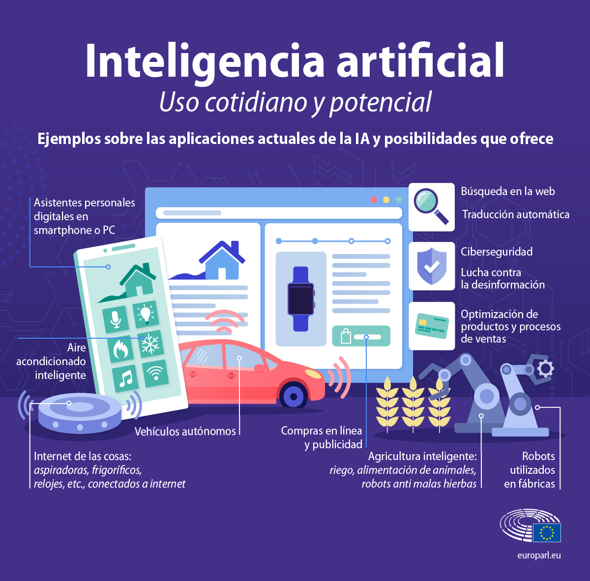

Introducción
La Inteligencia Artificial, también conocida como IA, es una tecnología que está cada vez más presente en nuestra vida cotidiana. Aunque muchas veces no nos damos cuenta, utilizamos sistemas de inteligencia artificial cuando buscamos información en Internet, usamos asistentes virtuales, miramos recomendaciones de videos o utilizamos algunas aplicaciones.
En los últimos años la inteligencia artificial avanzó rápidamente y comenzó a utilizarse en diferentes áreas como la educación, la medicina, el entretenimiento, las empresas, los videojuegos y el transporte.

¿Qué es la Inteligencia Artificial?
La inteligencia artificial es una tecnología que permite que las computadoras realicen tareas que antes solo podían hacer las personas, como aprender, razonar, comprender el lenguaje y resolver problemas. Aunque puede ser muy útil, sigue siendo una herramienta creada por los seres humanos
Estos sistemas pueden analizar información, reconocer patrones, , generar contenido, responder preguntas y ayudar a laspersonas a tomar decisiones.
Un ejemplo actual son los sistemas de IA generativa, que pueden crear textos, imágenes, sonidos y otros contenidos a partir de instrucciones realizadas por una persona.
Usos actuales de la Inteligencia Artificial
Actualmente la inteligencia artificial tiene muchos usos diferentes. Algunos de los más importantes son:
- Educación: ayuda a buscar información, explicar temas y crear materiales de estudio.
- Medicina: puede ayudar a analizar imágenes médicas y detectar determinados patrones.
- Entretenimiento: se utiliza para recomendar películas, series, música y videos.
- Videojuegos: permite crear comportamientos para personajes y mejorar diferentes sistemas del juego.
- Empresas: ayuda a analizar datos, automatizar tareas y atender consultas de clientes.
- Transporte: puede utilizarse para analizar rutas, tráfico y sistemas de conducción asistida.
- Creación de contenido: permite generar textos, imágenes, música y otros contenidos.

¿Cómo funciona?
Para funcionar, muchos sistemas de inteligencia artificial utilizan grandes cantidades de datos. Estos datos son procesados mediante algoritmos que permiten encontrar patrones y relaciones.
En el aprendizaje automático, por ejemplo, un sistema puede analizar numerosos ejemplos para aprender a reconocer determinadas características. Después puede utilizar lo aprendido para realizar predicciones o generar respuestas.
El funcionamiento exacto depende del tipo de inteligencia artificial y del objetivo para el que fue desarrollada.
Ventajas y desventajas
| Ventajas | Desventajas |
|---|---|
| Permite automatizar tareas. | Puede generar información incorrecta. |
| Puede analizar grandes cantidades de datos. | Puede afectar algunos puestos de trabajo. |
| Ayuda a ahorrar tiempo. | Puede utilizarse de manera irresponsable. |
| Puede ayudar en la educación y la investigación. | Falta de pensamiento propio. |
Ejemplos de aplicaciones
La inteligencia artificial puede encontrarse en muchas aplicaciones que usamos habitualmente. Algunos ejemplos son los asistentes virtuales, los sistemas de recomendación de plataformas digitales, los traductores automáticos y las herramientas de generación de contenido.
- Asistentes virtuales.
- Traductores automáticos.
- Recomendaciones de contenido.
- Generadores de imágenes y textos.
Video sobre Inteligencia Artificial
En el siguiente video se explica qué es la Inteligencia Artificial, cómo funciona y cuáles son algunos de sus usos en la actualidad.
Conclusión
En conclusión, la inteligencia artificial es una tecnología que nos ayuda a realizar tareas de una manera más rápida y sencilla. Puede ser muy útil para estudiar, trabajar, buscar información y resolver problemas. Pero es importante aprender a usarla correctamente y no depender completamente de ella.La IA debe ser una herramienta que nos ayude, pero nosotros tenemos que seguir pensando, aprendiendo y tomando nuestras propias decisiones.